Antananarivo · Madagascar · Missions freelance à distance
Antananarivo · Madagascar · Remote freelance work
Kaky Jean Philippe Lachapelle
NestJS · Next.js · Symfony · TypeScript
Lead technique et développeur full-stack, je transforme les besoins métier en applications et APIs prêtes pour la production. Je prends en charge le développement, les choix d'architecture et la mise en place des déploiements, tout en accompagnant les équipes dans la livraison.
As a technical lead and full-stack developer, I turn business requirements into applications and APIs ready for production. I combine hands-on development, architecture decisions and deployment setup with day-to-day support for the development team.
Je commence par clarifier les besoins, les contraintes et les priorités. Sur une application existante, j'examine le code et les intégrations avant de proposer les changements. Pendant le développement, je contribue au code, accompagne les développeurs et prépare la mise en production. Mon objectif : livrer les fonctionnalités attendues dans le respect des délais et laisser une base que l'équipe peut faire évoluer.
I start by clarifying requirements, constraints and priorities. For an existing application, I review the code and integrations before proposing changes. During development, I write code, support developers and prepare the release. The goal is to deliver the agreed features on schedule and leave the team with a codebase they can maintain and extend.
Développement d'applications web et d'APIs : conception de l'architecture, implémentation des fonctionnalités métier et mise en production avec Next.js, NestJS, Docker et GitLab CI/CD.
Built web applications and APIs with Next.js, NestJS, Docker and GitLab CI/CD, covering architecture, business features and production deployment.
Conception et développement du socle d'une plateforme multi-tenant, puis de ses fonctionnalités clés : authentification, catalogue, mise en relation, commandes, paiements Stripe Connect et intégration logistique.
Designed and built a multi-tenant platform's foundation and core features: authentication, catalog, business matching, orders, Stripe Connect payments and logistics integration.
Reprise d'une plateforme santé : audit du code et des services connectés, correctifs critiques et migration de l'hébergement. Accompagnement technique du dossier d'agrément pour les échanges avec le Dossier médical partagé (DMP).
Took over a healthcare platform: reviewed the code and connected services, addressed critical issues and migrated the hosting infrastructure. Supported the approval process for integrations with France's shared medical record system (DMP).
Mise en place d'une chaîne de livraison : migration GitLab, pipelines CI/CD, environnements de recette et de production avec Docker Swarm et Kubernetes, et revue de code avant intégration.
Set up the delivery workflow: GitLab migration, CI/CD pipelines, staging and production environments using Docker Swarm and Kubernetes, and code review before merging.
Accompagnement technique de plusieurs équipes : arbitrages d'architecture, audits de reprise, revue de code et intégration des nouveaux développeurs.
Provided technical guidance across several teams through architecture decisions, codebase assessments, code reviews and developer onboarding.
Encadrement de deux développeurs : répartition du travail, revue de code et accompagnement sur les difficultés d'implémentation.
Led two developers, coordinating tasks, reviewing code and helping resolve implementation challenges.
Développement et évolution d'une plateforme e-learning : nouvelles fonctionnalités, refactorisation, optimisation des performances, mises à niveau et tests.
Developed and maintained an e-learning platform, delivering features, refactoring code, improving performance, upgrading frameworks and adding tests.
Conception et développement d'applications de comptabilité, de gestion de stock et de prise de commande pour la restauration.
Designed and built applications for accounting, inventory management and restaurant ordering.
Développement d'un système de scoring crédit par apprentissage automatique, avec une interface métier pour exploiter les résultats (SMMEC).
Built a machine-learning credit scoring system with a business interface for using the results (SMMEC).
Refonte d'une application institutionnelle, travaux de prédiction d'effectifs et développement d'une plateforme d'emploi (SOA).
Rebuilt an institutional application, worked on enrollment forecasting and developed a job platform (SOA).
Automatisation du reporting de caisses sur plusieurs millions de lignes : accès à l'information en quelques secondes, contre plusieurs jours auparavant (SMMEC).
Automated cash-desk reporting across millions of database rows, making information available in seconds instead of days (SMMEC).
Formation
Education
Master 2 BIHAR — ESTIA (France) · ingénierie des données et intelligence artificielle
Licence Informatique — IT-University Antananarivo · développement full-stack
BSc Computer Science — IT-University Antananarivo · full-stack development
Projets personnels
Personal projects
Mes projets personnels partent d'une envie de comprendre ou d'un outil dont j'ai besoin. Du rendu 3D aux agents IA, en passant par l'analyse de code et les applications Windows, ils me permettent d'explorer le logiciel au-delà de mes missions web.
My personal projects start with something I want to understand or a tool I need. From 3D rendering and AI agents to code analysis and Windows applications, they give me room to explore software beyond my client work.
Rova
C++20 · OpenGL 4.5 · CMake
Un moteur 3D isométrique développé en C++ et OpenGL pour explorer le rendu et la construction d'un moteur de jeu. Les captures et vidéos montrent les scènes et prototypes réalisés avec Rova.
An isometric 3D engine built in C++ and OpenGL to explore rendering and game-engine development. The screenshots and videos show scenes and prototypes built with Rova.
Captures
Screenshots
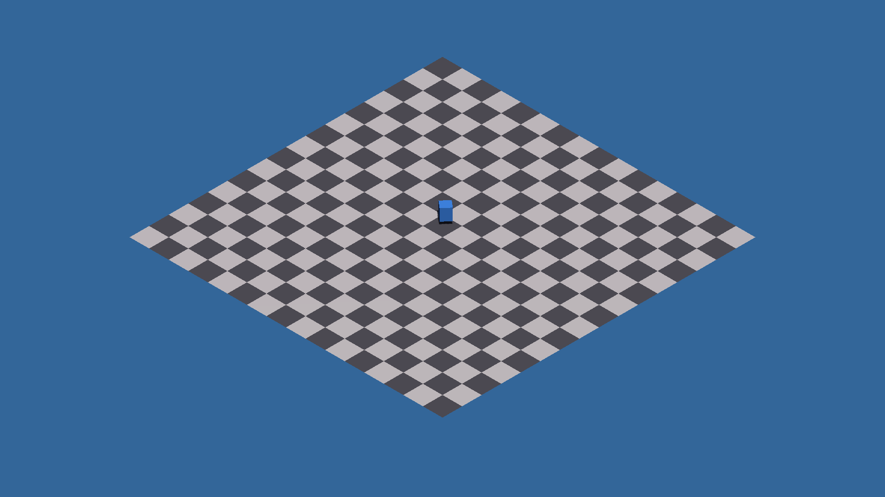
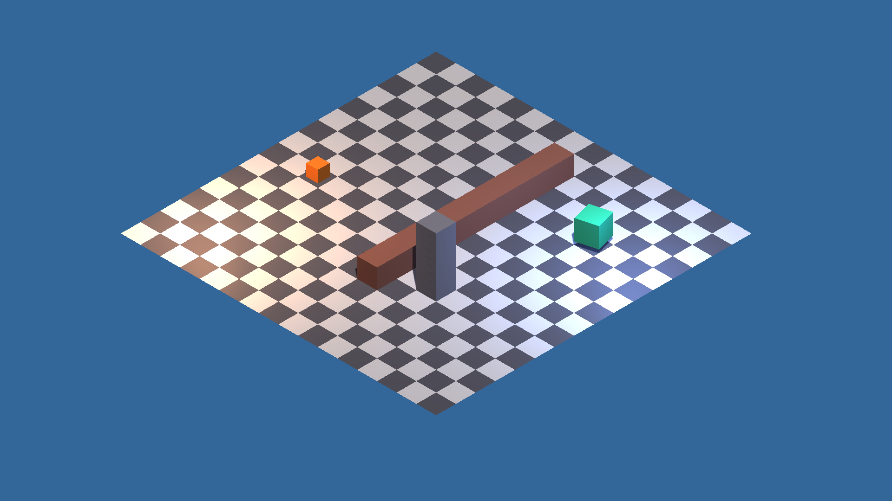
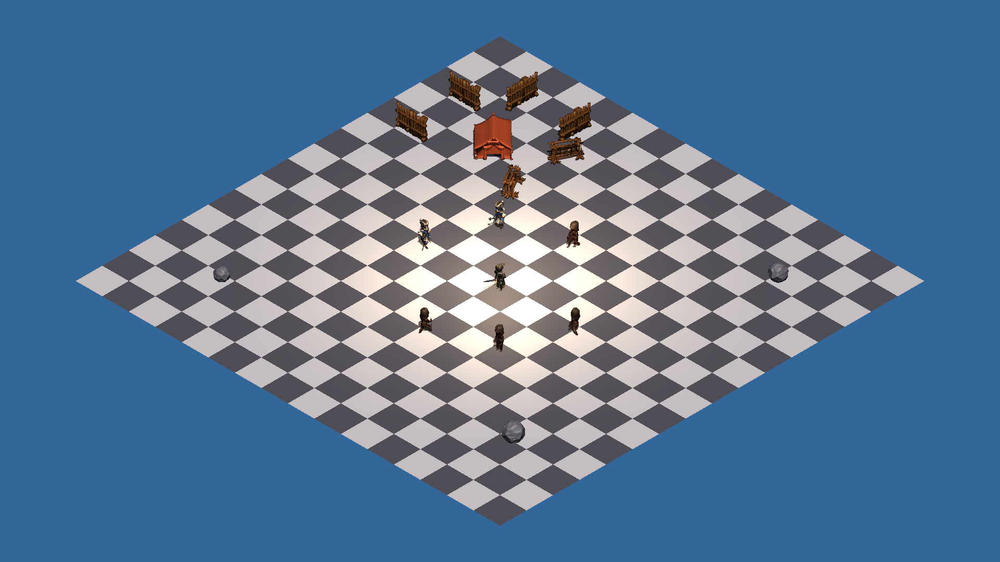
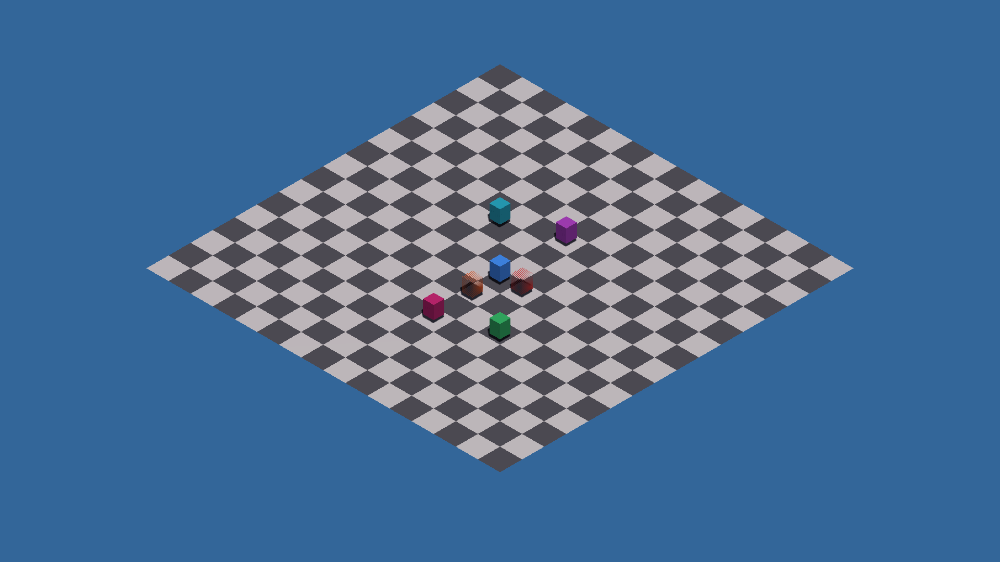
Démos vidéo
Video demos
Aikam
Next.js · NestJS · Python · LangGraph
Un projet d'agent IA pour les boutiques qui vendent sur les réseaux sociaux. Aikam vise à automatiser les opérations de commerce social à partir du catalogue, avec des règles métier et des validations humaines pour encadrer les actions de l'agent.
An AI agent project for shops selling through social media. Aikam aims to automate social-commerce operations using the product catalog, with business rules and human approvals governing the agent's actions.
Captures
Screenshots
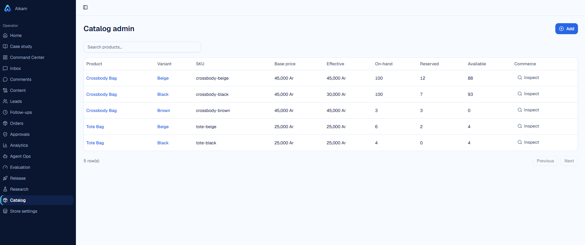
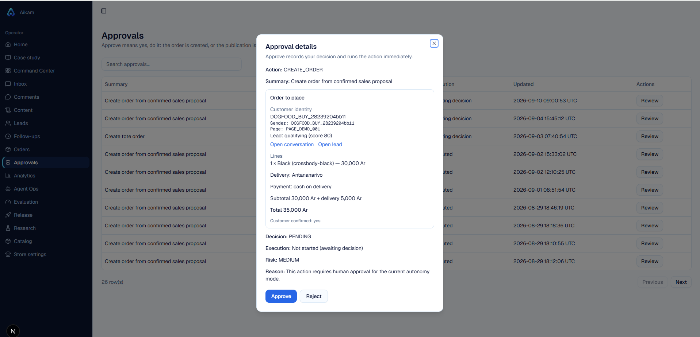
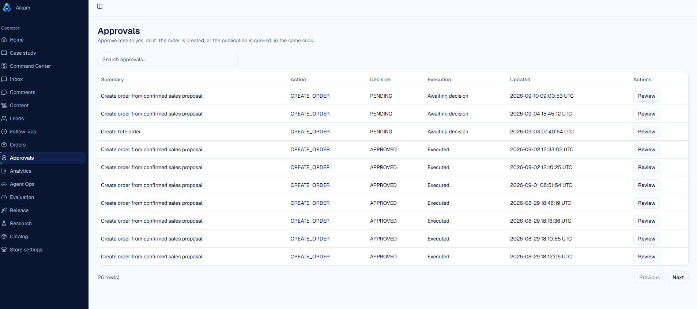
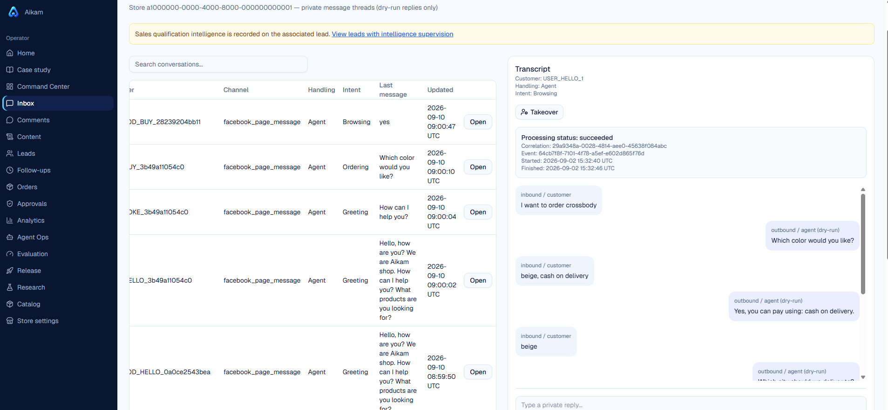
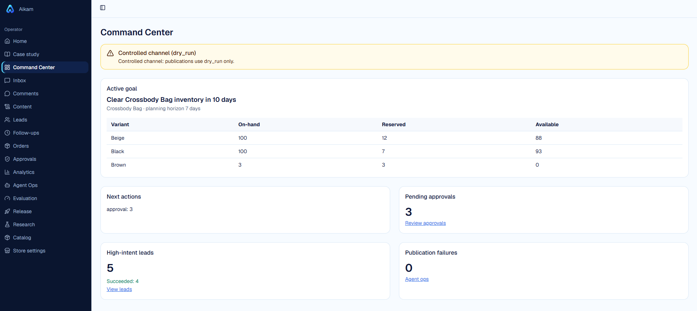
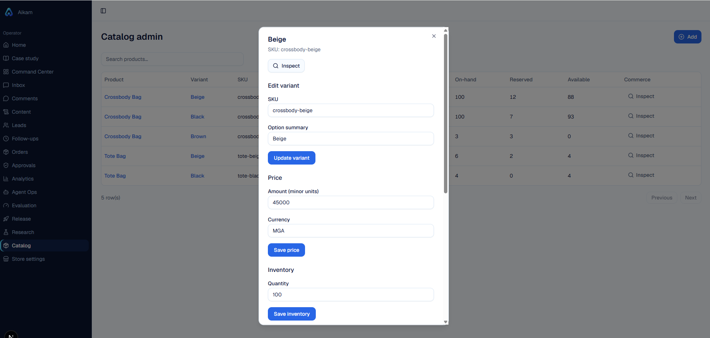
Pomodoro
C# · .NET · Windows tray
Un minuteur discret dans la barre système de Windows pour alterner concentration et pauses. Cycles configurables, notifications et écran de pause optionnel, dans un exécutable sans installateur. Les réglages sont conservés sur l'ordinateur.
A Windows system-tray timer for alternating focus sessions and breaks. Configurable cycles, notifications and an optional break overlay, packaged as a standalone executable with no installer. Settings are stored locally.
Captures
Screenshots
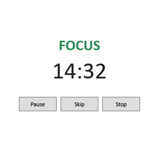
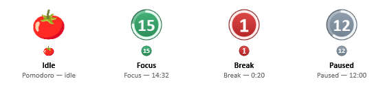
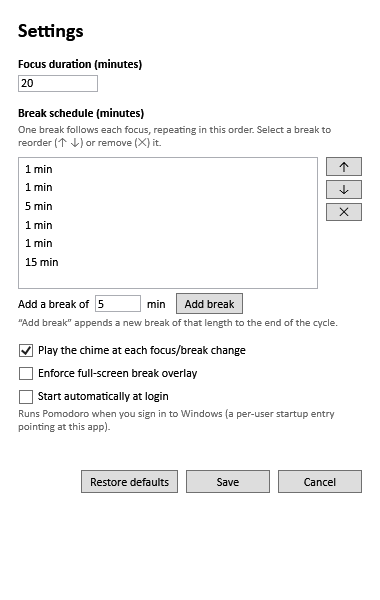
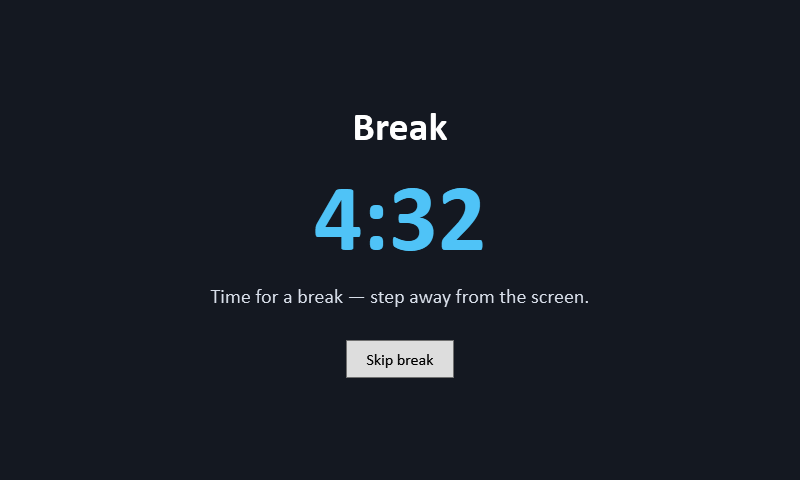
ts-structure-radar
TypeScript · Tree-sitter · NestJS
Un outil d'analyse de code TypeScript et NestJS avec Tree-sitter. Il extrait la structure et les dépendances du code pour faciliter la lecture de l'architecture, avec des visualisations locales et des exports Mermaid.
A TypeScript and NestJS code analysis tool built with Tree-sitter. It extracts code structure and dependencies to make the architecture easier to navigate, with local visualizations and Mermaid exports.
MalagasyWire
.NET · WFP · Tauri · React
Un projet d'outil Windows pour comprendre et contrôler les connexions réseau des applications. Il associe les mécanismes de filtrage de Windows à une interface Tauri/React pour explorer le trafic et les règles de pare-feu.
A Windows tool project for understanding and controlling application network connections. It combines Windows filtering capabilities with a Tauri/React interface for exploring traffic and firewall rules.
Parlons de votre projet
Let's discuss your project
Vous avez une application à développer, une plateforme à reprendre ou une équipe à accompagner ? Présentez-moi votre besoin, l'existant et vos principales contraintes. Nous pourrons définir le périmètre de mon intervention. Je suis disponible pour des missions freelance à distance depuis Madagascar.
Do you need to build an application, take over an existing platform or support your development team? Tell me about your goals, current setup and constraints so we can define how I can help. I am available for remote freelance work from Madagascar.